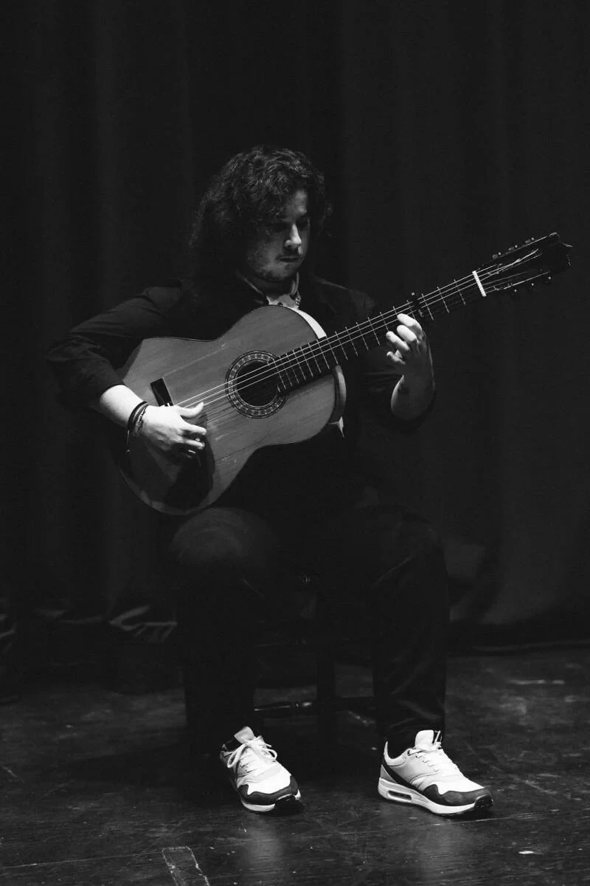

El pasado enero, en manos de nuestro querido Raúl Suárez «Perla Hijo», nuestras guitarras se subieron al Cartuja Center de Sevilla en la gira «Bis a Bis» de Los Morancos. No nos puede hacer más ilusión.

Ver uno de nuestros instrumentos sobre un escenario de esta categoría, y en las manos de un guitarrista como Perla Hijo, es la mejor recompensa a las horas de trabajo en el taller. Cada mango tallado, cada aro domado y cada capa de barniz encuentran aquí su sentido.
Gracias a Raúl por confiar en nosotros y a todo el equipo de la gira por hacerlo posible. Seguimos afinando, afinando el oído y las manos, para que la próxima suene todavía mejor.
Fotografías: Manuel Suárez.